Kalender, forum, chat og filarkiv. Lukket for alle andre end os.
fffloge.dk
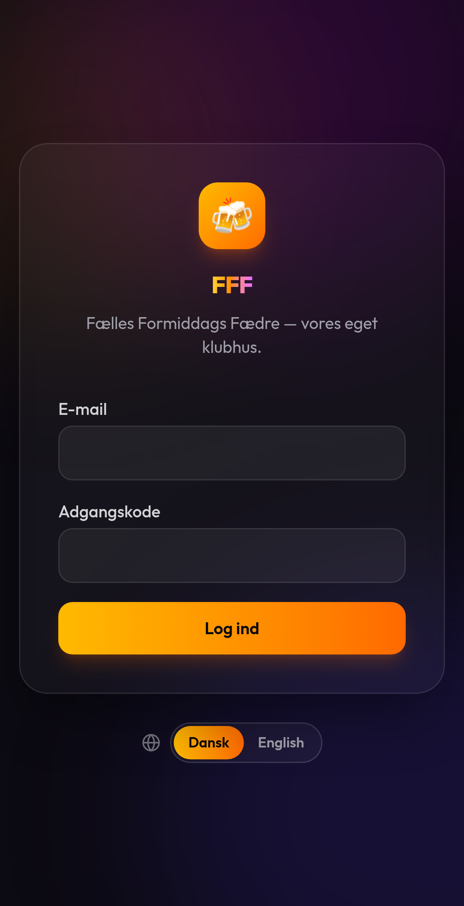
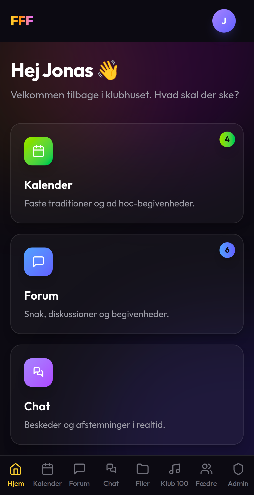
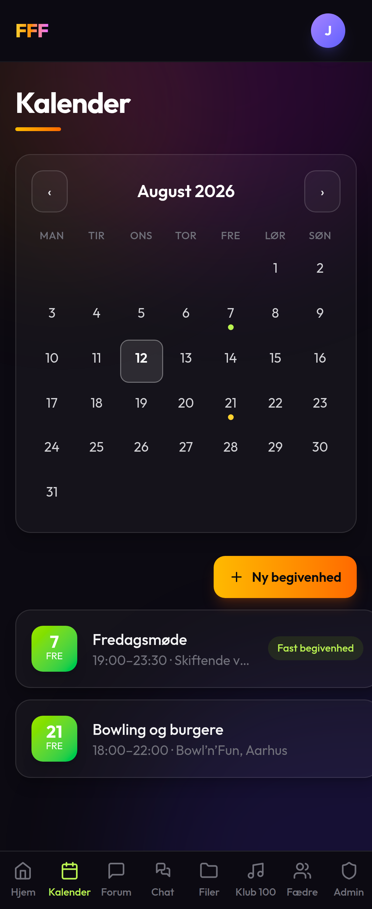
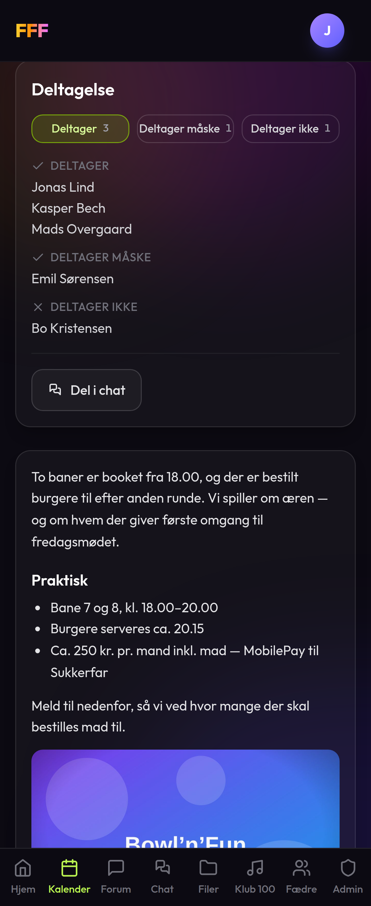
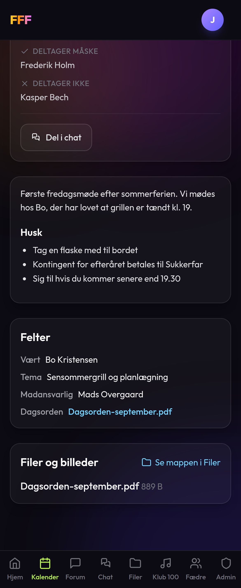
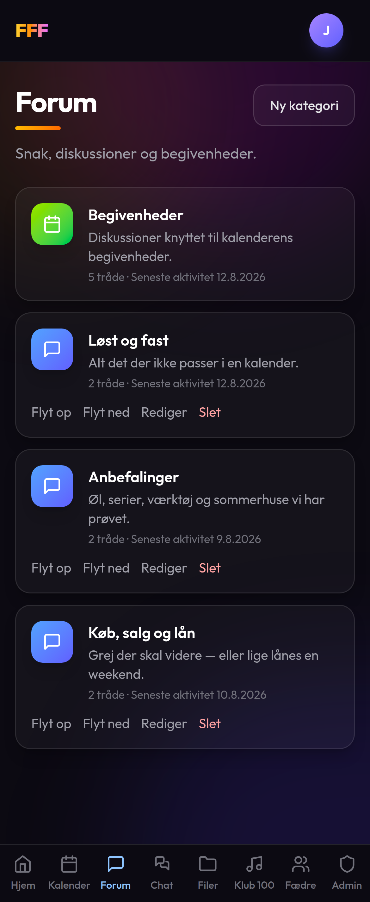
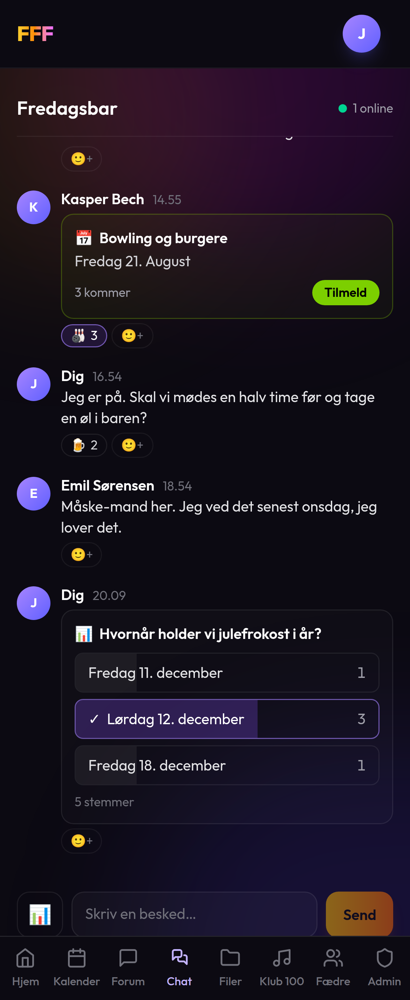
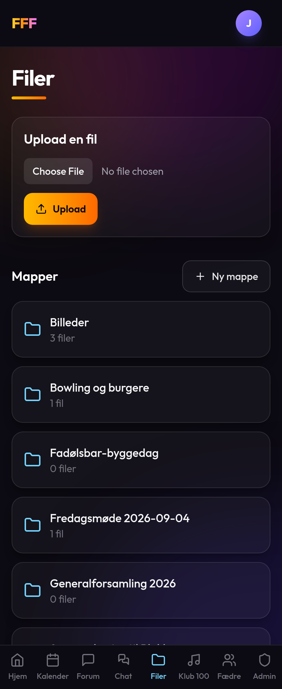
iPhone og iPad — i Safari
Android — i Chrome
Så: notifikationer
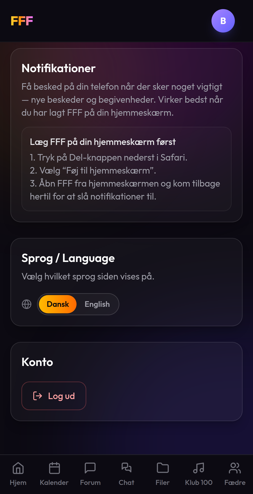
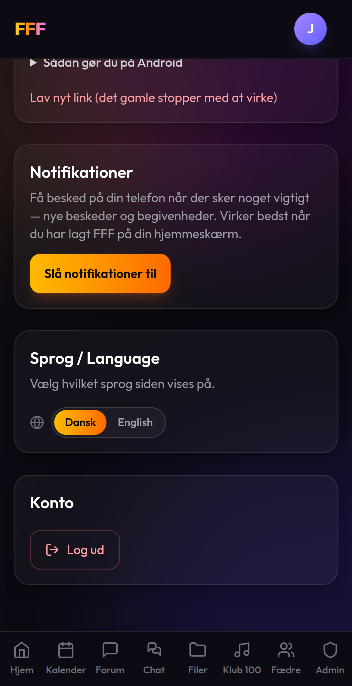
Kom i gang
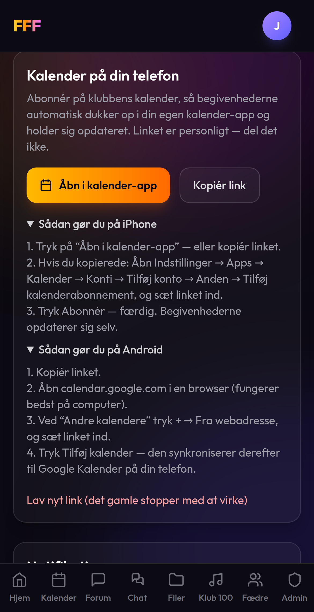
| se hvornår der sker noget | Kalender |
| melde til eller fra | Kalender → begivenheden |
| sige noget hurtigt | Chat |
| sige noget der skal kunne findes igen | Forum |
| få besked på telefonen | Din profil → Notifikationer |